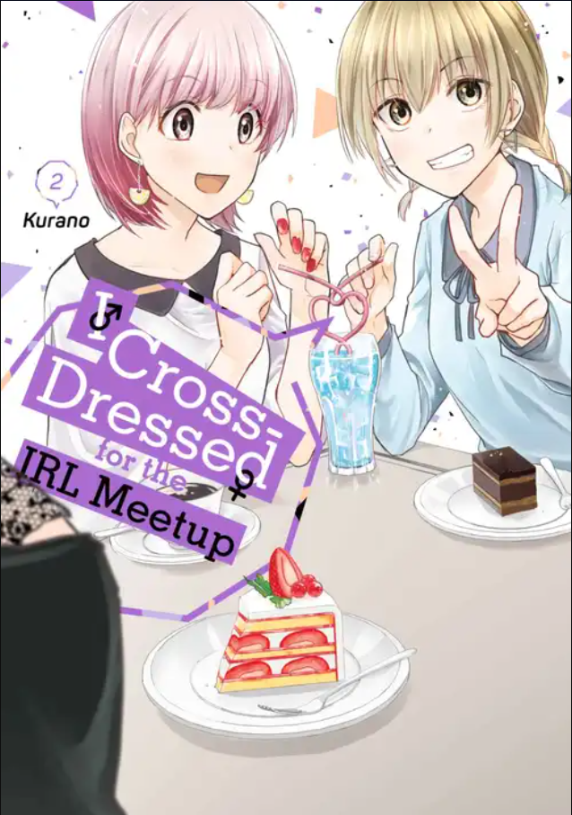

i crossed-dressed for irl meetup
I Cross-Dressed for the IRL Meetup is a romantic comedy manga. It follows Satoshi Morinaga, a young man who joins a monthly offline meetup for a group of women, dressing up like a woman for it and going by his online username Cocoa; the other members of the group are Opera, Lemon, and Kantentarou.
Although Cocoa at first goes to the meetings because he enjoys visiting cafés with the others the stated purpose for the meetups he continues doing so because he finds himself attracted to Opera, but the fact that he is hiding his gender prevents the two from getting closer. During one meetup, Opera realizes that Cocoa is a cross-dressing man and reveals to him that he also is one; Cocoa begins to wonder if the remaining two members of the group could be cross-dressers too, but realizes that he is rude for speculating about their gender, and comes to terms with how Opera's gender should not affect his attraction to him. The group continues the meetings, and eventually Cocoa learns that Lemon also is cross-dressing, and that Kantentarou is a trans woman.